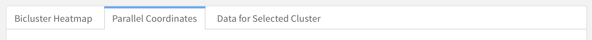
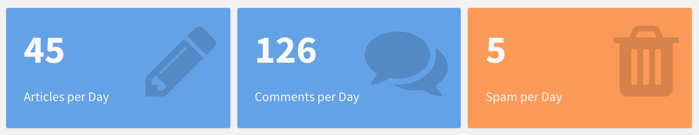
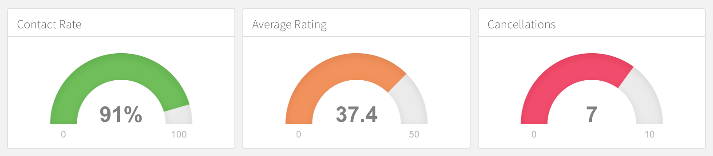
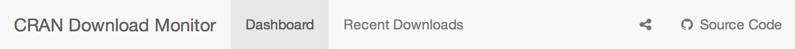
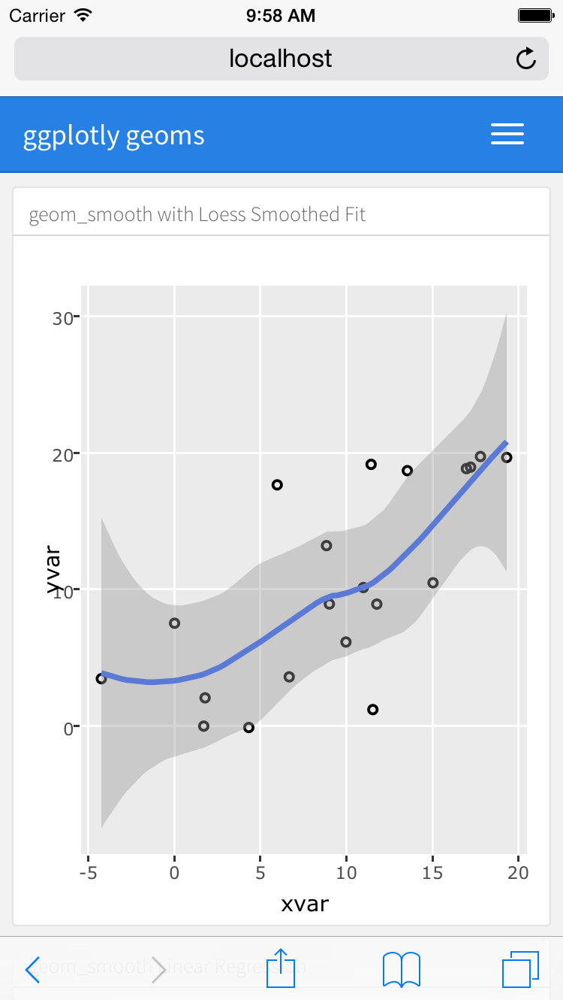

Overview
You can use flexdashboard to publish groups of related data visualizations as a dashboard. A wide variety of components can be included in flexdashboard layouts, including:
Interactive JavaScript data visualizations based on htmlwidgets.
R graphical output including base, lattice, and grid graphics.
Tabular data (with optional sorting, filtering, and paging).
Value boxes for highlighting important summary data.
Gauges for displaying values on a meter within a specified range.
Text annotations of various kinds.
Flexible options for component layout are available and dashboards with many components can be organized into multiple pages. The flexdashboard layout system also adapts itself intelligently for display on mobile devices.
There are also several ways to add interactivity to flexdashboards. You can use htmlwidgets to add client-side JavaScript interactivity (data tips, panning, zooming, etc.) and Shiny to build fully custom interactions in R.
Layout
Orientation
Scrolling Layout
By default flexdashboard charts are laid out to automatically fill
the height of the browser. This works well for a small number of
vertically stacked charts, however if you have lots of charts you’ll
probably want to scroll rather than fit them all onto the page. You can
control this behavior using the vertical_layout option.
Specify fill to vertically re-size charts so they
completely fill the page and scroll to layout charts at
their natural height, scrolling the page if necessary.
For example, the following layout includes 3 charts and requests that the page scroll as necessary to accommodate their natural height:
Tabsets
If you have several components you’d like to display within a row or column then rather than attempting to fit them all on screen at the same time you can lay them out as a tabset. This is especially appropriate when one component is primary (i.e. should be seen by all readers) and the others provide secondary information that might be of interest to only some readers.

In many cases tabsets are a better solution than
vertical_layout: scroll for displaying large numbers of
components since they are so straightforward to navigate.
To layout a row or column as a tabset you simply add the
{.tabset} attribute to the section heading. For example,
the following code lays out the second column in tabset:

Rows can also be laid out as a tabset as illustrated here:

Note that here we also apply the {.tabset-fade}
attribute which results in a fade in/out effect when switching tabs.
Header Attributes
flexdashboard relies heavily on pandoc’s header attribute syntax and you’ll see the syntax referenced throughout our documentation. In fact, the tabset examples above use header attributes in two places:
Column {.tabset}
-------------------------------------Row {.tabset .tabset-fade}
-------------------------------------Header attributes appear directly after the header name and are
surrounded in braces. The tabset example uses class attributes, which
are denoted with a . (period) prefix. In the rendered HTML,
the CSS classes tabset and tabset tabset-fade
are added to the sections defined by the Column and Row headings.
Similarly, header attributes can be used to provide a unique
identifier for a section. Identifiers are assigned using a
# (number sign) prefix (e.g., #identifier).
flexdashboard layouts don’t make use of these identifiers, but you may
find them helpful to include if you want to write custom CSS to provide
styles for a specific box, column or row.
Many flexdashboard layout options use attributes in the form of a
key-value pair, such as data-height=600, in which the key
and value are separated by an = (equal sign). Be careful,
you cannot have spaces beween the key and the value! If the value
contains spaces, you can wrap it in quotes,
e.g. data-navmenu="More Info".
You’re allowed to attach one ID and multiple classes or key-value
pairs. For example,
{#plot-tabs .tabset .tabset-fade data-height=200} is a
valid set of header attributes that you might use in flexdashboard.
Components
HTML Widgets
The htmlwidgets framework provides high-level R bindings for JavaScript data visualization libraries. Charts based on htmlwidgets are ideal for use with flexdashboard because they can dynamically re-size themselves, so will nearly always fit perfectly within the bounds of their flexdashboard containers.
Available htmlwidgets include:
Leaflet, a library for creating dynamic maps that support panning and zooming, with various annotations like markers, polygons, and popups.
dygraphs, which provides rich facilities for charting time-series data and includes support for many interactive features including series/point highlighting, zooming, and panning.
Plotly, which via its ggplotly interface allows you to easily translate your ggplot2 graphics to an interactive web-based version.
rbokeh, an interface to Bokeh, a powerful declarative Bokeh framework for creating web-based plots.
Highcharter, a rich R interface to the popular Highcharts JavaScript graphics library.
visNetwork, an interface to the network visualization capabilities of the vis.js library.
There are over 30 packages on CRAN which provide htmlwidgets. You can find example uses of several of the more popular htmlwidgets in the htmlwidgets showcase and browse all available widgets in the gallery.
You include htmlwidgets in an R Markdown document just like you include R plots. For example, the following is a simple dashboard definition that includes 3 dygraphs time-series charts:
Note that one disadvantage of htmlwidgets is that they embed their data directly in their host web page, so may encounter performance problems for larger datasets. For larger dataset sizes the use of standard R graphics (described below) may be preferable.
R Graphics
You can use any chart created with standard R graphics (base, lattice, grid, etc.) with flexdashboard.
Within dynamic (Shiny) dashboards these charts are automatically sized to fit within their dashboard containers so long as they are wrapped within a call to renderPlot.
Within static dashboards standard R graphics are also scaled (with aspect ratios preserved so there is no stretching or distortion). However, since these charts are PNG images it’s not possible for them to seamlessly fill the bounds of their container. The following section provides tips on how to get the best possible fit for a given graphic.
Figure Scaling
When creating static (non-Shiny) dashboards containing standard R
graphics it’s critical to define knitr fig.width and
fig.height values as close as possible to what they’ll
actually be on the page. This enables them to fit into their layout
container as closely as possible when the dashboard is laid out.
Here’s an example of a row based layout that includes 3 charts from R base graphics:
We’ve specified an explicit fig.height and
fig.width for each chart so that their rendered size fits
their flex container as closely as possible. Note that the ideal values
for these dimensions typically need to be determined by
experimentation.
Tabular Data
You can include tabular data within flexdashboards in one of two ways:
As a simple tabular display.
As a DataTable that includes sorting, filtering, and pagination.
Simple Table
A simple table is ideal for smaller numbers of records (i.e. 40-50 or
less). The code required for simple tables differs depending on whether
you are building a static or dynamic (Shiny-based) flexdashboard. For
static dashboards, you should use the knitr::kable function
to output your dataset, for example:
For Shiny based dashboards you should use the
shiny::renderTable function, for example:
This ensures that the tabular display is updated when the inputs upon which it depends change.
Data Table
The DT package (an interface to the DataTables JavaScript library) can display R matrices or data frames as interactive HTML tables that support filtering, pagination, and sorting.
Note that if you want to use DataTables with flexdashboard you should install the very latest version of the DT (v0.2) from CRAN (it contains some changes required for flexdashboard compatibility):
install.packages("DT")To include a DataTable you use the DT::datatable
function:
Note that we specified the bPaginate = FALSE option.
This is appropriate for smaller datasets where scrolling provides a
comfortable way of navigating through the data.
If you have a large dataset where you want to enable pagination, you
should be sure to specify the pageLength option to show
more than the default 10 rows of your dataset per page:
Mobile Display
On desktop and tablet displays, both the Simple Table and Data Table components will fit exactly within the bounds of their flexdashboard container and provide a scroll bar to view records that don’t fit on screen. However, on mobile phones both components will never use a scroll bar (as that would compete with scrolling the overall dashboard). Rather, on mobile phone layouts:
The Simple Table will display all available records; and
The Data Table will use pagination (i.e. force
bPaginate = TRUE).
Value Boxes
Sometimes you want to include one or more simple values within a
dashboard. You can use the valueBox function to display
single values along with a title and optional icon. For example, here
are three side-by-side sections each displaying a single value:

Here is the code which was used to generate these value boxes:
The valueBox function is called to emit a value and
specify an icon (see Icon Sets below for
details on available icons).
The third code chunk (“Spam per Day”) makes the background color of
the value box dynamic using the color parameter. Available
colors include “primary”, “info”, “success”, “warning”, and “danger”
(the default is “primary”). For custom colors you can also specify any
valid CSS color (e.g. “#ffffff”, “rgb(100,100,100)”, etc.).
Linking
If a valueBox displays a value for which additional
detail is available on another dashboard
page you can enable navigation to the other page via the
href parameter. For example, if you have a page with the
anchor “#details” you could link a value box to it as follows:
Gauges
Gauges display values on a meter within a specified range. For example, here is a set of 3 gauges:

Here is the code used to generate these gauges:
There are a few things to note about this example:
The
gaugefunction is used to output a gauge. It has three required arguments:value,min, andmax(these can be any numeric values).You can specify an optional
symbolto be displayed alongside the value (in the example “%” is used to denote a percentage).You can specify a set of custom color
sectorsusing thegaugeSectorsfunction. By default the current theme’s “success” color (typically green) is used for the gauge color. Thesectorsoption enables you to specify a set of three value ranges (“success”, “warning”, and “danger”) which cause the gauge’s color to change based on its value.
Linking
If a gauge displays a value for which additional detail
is available on another dashboard page you
can enable navigation to the other page via the href
parameter. For example, if you have a page with the anchor “#details”
you could link a gauge to it as follows:
Navigation Bar
By default, the flexdashboard navigation bar includes the document’s
title, author, and date. When a
dashboard has Multiple Pages, links to the
various pages are also included on the left side of the navigation bar.
You can also add social links and a link to view the source code of the
dashboard. For example:

In addition, you can custom links to the navigation bar using the
navbar option. For example, the following adds an “About”
link to the left side of the navigation bar:
Navigation bar items must include either a title or
icon field (or both). You should also include a
href as the navigation target. The align field
is optional (it can be “left” or “right” and defaults to “right”).
See Icon Sets above for details on the icons available for use within the navigation bar.
Social Links
You can include links to social sharing services via the
social option. For example, the following dashboard
includes Twitter and Facebook links as well as a drop-down menu with a
more complete list of services:
The social option can include any number of the
following services: “facebook”, “twitter”, “google-plus”, “linkedin”,
and “pinterest”. You can also specify “menu” to provide a generic
sharing drop-down menu that includes all of the services.
Source Code
You can include a link to the dashboard’s source code using the
source_code option. Source code can either be embedded into
the document (source_code: embed) or can be a link to a URL
where the source code can be found online
(e.g. source_code: "https://github.com/user/repo"). For
example, the following dashboard includes an embedded copy of the source
code which can be viewed by clicking the “Source Code” button on the
navigation bar:
Text Annotations
Text Sections
If you need to include additional narrative or explanation within your dashboard you can do so in the following ways:
You can include content at the top of the page before dashboard sections are introduced.
You can define dashboard sections that don’t include a chart but rather include arbitrary content (text, images, equations, etc.)
For example, the following dashboard includes some content at the top and a dashboard section that contains only text:
Title and Notes
Each component within a dashboard includes optional title and notes
sections. The title is simply the text after the level 3
(###) section heading. The notes are any text prefaced with
> after the code chunk which yields the component’s
output. For example:
You can exclude the title entirely by applying the
.no-title attribute to a section heading, for example:
Sizing
To create an ideal layout for your dashboard, it’s important to understand how the size of individual charts is determined. This section describes the layout algorithm and the various ways you can tweak its behavior.
Width and Height
The width of charts in flexdashboard is ultimately determined by the
width of the browser. If your layout has a single column then charts
will occupy the full width of the browser. If your layout has multiple
columns then the columns will split the available width evenly (unless
overridden via the data-width attribute as described
below).
The height of charts is determined in one of two ways depending on
whether your dashboard is configured to fit itself into the vertical
confines of the page (vertical_layout: fill) or to scroll
(vertical_layout: scroll):
For dashboards that fill the page the height of charts will be determined by the height of the browser, with vertically stacked charts splitting the available height evenly (unless overridden via the
data-heightattribute as described below).For scrolling dashboards, the height of charts will be determined by the knitr
fig.heightoption, which defaults to 5 inches (480 pixels).
Size Attributes
The nature of the charts within your dashboard (desired emphasis, visualization types, etc.) will often dictate that you’ll want to change the default sizing behavior. If no size attributes are specified then the relative size of each chart will be determined by its knitr figure size (this is 6 x 4.8 inches or 576 x 460 pixels by default).
You can modify the default sizing behavior by applying the
data-width and data-height attributes to rows,
columns, or even individual charts. These attributes establish the
relative size between charts laid out in the same dimension (horizontal
or vertical).
Examples
This example use the data-height attribute to dictate a
larger vertical size for the first row, resulting in a layout that more
clearly emphasizes the first chart.
This example is a variation of the single-column layout demonstrated
above with a data-height attribute applied to the first
chart:
Chart Padding
By default flexdashboard places 8 pixels of padding around the edges
of charts. For some chart types this might not be ideal. In this case
you can either add the .no-padding attribute to specify no
padding at all or the data-padding attribute to specify a
specific number of pixels. For example:
Flexbox Layout
Dashboard layout is done using the browser flexbox engine, which alters its items’ width and/or height to best fill the available space on any display device. A flexbox layout expands items to fill available free space, or shrinks them to prevent overflow.
The implication of this is that chart dimensions established via
either knitr figure sizes or data-width and
data-height attributes are used to establish relative sizes
between charts within the same horizontal or vertical dimension as
opposed to absolute sizes (this corresponds to the
flex-grow and flex-shrink CSS properties).
Multiple Pages
If you have more than a handful of charts you’d like to include in a
dashboard, you may want to consider dividing the dashboard into multiple
pages. To define a page just use a level 1 markdown header
(==================). Each page you define will have its
own top-level navigation tab.
For example, this code creates a dashboard with two pages, each containing two charts:
Page Orientation
Note that in this example both pages use the default “columns”
orientation. It is however possible to specify a distinct orientation
for an individual page. This is done by adding the
data-orientation attribute to the header of the page you
want to change the orientation of. For example:
Page Navigation
By default each page you define is given its own top level tab on the navigation bar. However, if you have a large number of pages (more than 5) you might want to organize your pages into menus on the navigation bar.
To specify that a page should be accessed via a navigation bar menu
you use the data-navmenu attribute. For example, the
following dashboard has 4 pages, 2 of which are located on “Menu A” and
two of which are located on “Menu B”:
You can optionally provide icons for the navigation bar menus by
including the data-navmenu-icon attribute when you first
assign a page to a navigation bar menu. This attribute inherits the same
icon set and syntax as Page Icons, which are
described below.
Page Links
You can form links directly to dashboard pages using markdown link
syntax: [Page 2]. To use custom link text you can also
create a link via the page’s anchor: [Page Two](#page-2).
Both styles of page linking are demonstrated in this example:
Hiding Pages
The typical means of navigating between pages is the global
navigation bar as described above. However, if you’ve already provided
prominent navigational links to pages you may wish to exclude them from
the navigation bar entirely. This can be accomplished by adding the
{.hidden} attribute to the page you want to hide from the
navigation bar. For example:
Page Icons
You can add an icon to the navigation menu for a page using the
data-icon attribute. For example, the following specifies a
navigation bar icon for each of two pages:
You can specify icons for navigation bar items from three different icon sets:
When referring to an icon you should use its full name including the icon set prefix (e.g. “fa-github”, “ion-social-twitter”, “glyphicon-time”, etc.).
Storyboards
Storyboards are an alternative to the row and column based layout schemes described above that are well suited to presenting a sequence of data visualizations and related commentary.
Storyboard Basics
To create a storyboard layout you do the following:
Add the
storyboard: trueoption to the dashboard.Include a set of level 3 (
###) dashboard components. Each component will be allocated its own frame in the storyboard, with the section title used as the navigation caption.
The basics of creating storyboards are explained below. For a more complete example, see the HTML Widgets Showcase storyboard.
The following code creates a storyboard with 3 frames:
Note that the level 3 section titles (e.g. “Frame 1”) will be used as navigation captions. These captions should provide a one or two sentence summary of the frame, so will typically be longer than illustrated here.
Storyboard Pages
You can layout one or more pages of a dashboard as storyboards and
then use traditional row and column layout on the other pages. To do
this, you exclude the storyboard: true option and instead
add the {.storyboard} class to pages you want laid out as
storyboards.
For example, the following dashboard includes a storyboard on the first page (“Analysis”) as well as another page (“Details”) that uses conventional layout:
Commentary
You may wish to add commentary alongside the frames in your
storyboard. To do this you add a horizontal rule separator
(***) after the main body of frame content. Content after
the separator will appear in a commentary sidebar to the right. For
example:
Note that the second frame includes a
data-commentary-width=400 attribute. By default the width
of the commentary sidebar is 300 pixels, you can use
data-commentary-width to modify this on a per-frame
basis.
Mobile Layout
The flexdashboard layout system adapts itself intelligently for display on mobile devices. This section describes layout behavior for various screen sizes as well as some guidelines for ensuring that your dashboards work well on smaller screens.
Medium Screens
The layout of dashboard components for medium sized mobile screens (e.g. tablets) is the same as for larger desktop screens (any screen with width greater than 768 pixels is considered a medium screen).
Rows and columns are allocated using the default figure sizes and
respect the relative proportions established via the use of
data-widthattributes. The only exception are sidebars, which are reduced to 220
pixels wide whenever the screen is less than 993 pixels wide.
Small Screens

For mobile phones (any screen less than or equal to 768 pixels wide) flexdashboard uses special layout behavior. Since these screens don’t generally have the width to show multiple side-by-side columns, all dashboard components are “flattened” into one single column layout.
In addition, some flexdashboard components have special behavior to adapt themselves to smaller mobile screens:
By default R graphics are rendered twice, once at their natural
fig.widthandfig.height, and once at a mobile-optimized size (3.75 x 4.8 inches). When displaying on a mobile phone in portrait orientation the mobile size is used (this can be controlled via thefig_mobileoption).Simple tables always show all of their rows (this is so that scrolling the table doesn’t interfere with scrolling the mobile display).
DataTables always use pagination (again, so that scrolling the DataTable doesn’t interfere with scrolling the overall display).
Mobile CSS
If certain components of your dashboard don’t work well on smaller
mobile devices you can exclude them by applying the
{.no-mobile} class attribute to a dashboard section. For
example, this dashboard hides its second component on mobile
devices:
It’s also possible to create a mobile-specific version of a given
dashboard component that will be used in place of the default version.
You can do this by creating two identically titled sections and applying
the {.mobile} class attribute to one of them. For
example:
Appearance
Themes
A variety of themes are available to modify the base appearance of flexdashboard. Available themes include:
- default
- cosmo
- bootstrap
- cerulean
- journal
- flatly
- readable
- spacelab
- united
- lumen
- paper
- sandstone
- simplex
- yeti
The “cosmo” theme is used when “default” is specified. These themes are all based on the themes available in the R Markdown package (which are in turn based on Bootswatch themes).
Use the theme option to specify an alternate theme:
If you are looking for a theme that embeds well inside another content frame (e.g. one that doesn’t use such a strong color for the navigation bar) then the “bootstrap” theme is a good choice.
CSS Styles
You can customize the various CSS styles used in flexdashboard by
including a stylesheet via the css option. For example:
Note that the base CSS styles are defined both the active Bootswatch theme as well as in the flexdashboard specific stylesheets found here: https://github.com/rstudio/flexdashboard/tree/feature/logo-and-favicon/inst/rmarkdown/templates/flex_dashboard/resources
Navigation Bar Colors
You can use CSS to customize the colors used within the navigation bar of each theme. If you do this, realize that themes define colors for many elements and states, so you should be careful to override all of the required elements.
The navigation bar for flexdashboard uses the
navbar-inverse class for each of its themes. Here is the
navabar-inverse CSS for the default “cosmo” theme used by
flexdashboard:
https://github.com/thomaspark/bootswatch/blob/v3.3.5/cosmo/bootstrap.css#L4643-L4744
If you want to customize these colors you should create a CSS
stylesheet with the requisite navbar-inverse entries and
include it using the css option of the
flex_dashboard format.
Logo & Favicon
You can specify a logo image and/or favicon for your dashboard using
the logo and favicon options, respectively.
For example:
The logo will be placed at the far left of the dashboard navigation bar. No scaling is performed on the logo image, so it should fit exactly within the dimensions of the navigation bar (48 pixels high for the default “cosmo” theme, other themes may have slightly different navigation bar heights).